Intake Manifold: Service and Repair
Intake Manifold Removal and InstallationIntake Manifold:
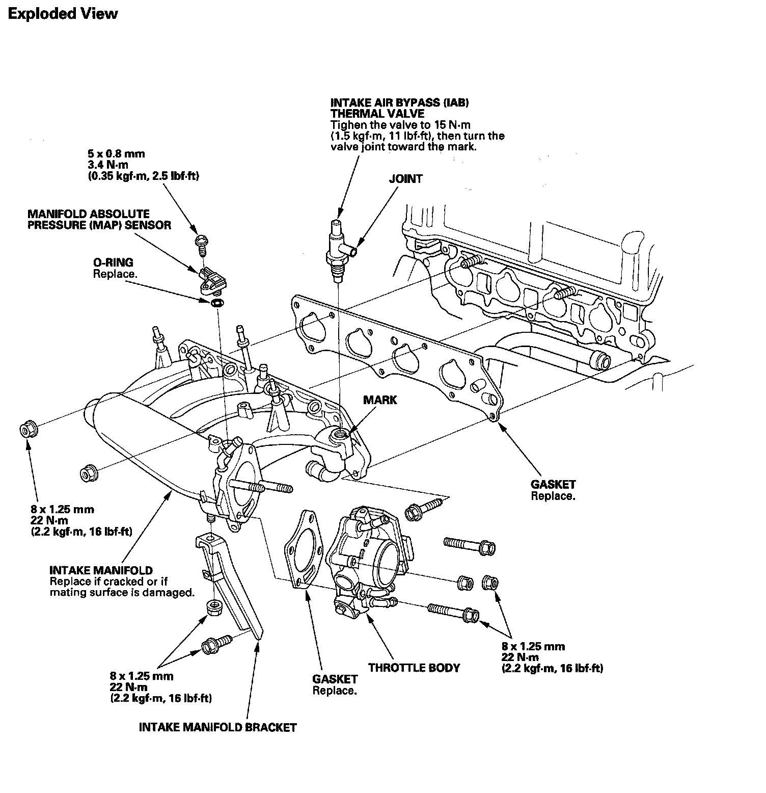
Removal
1. Drain the engine coolant.
2. Remove the engine cover.
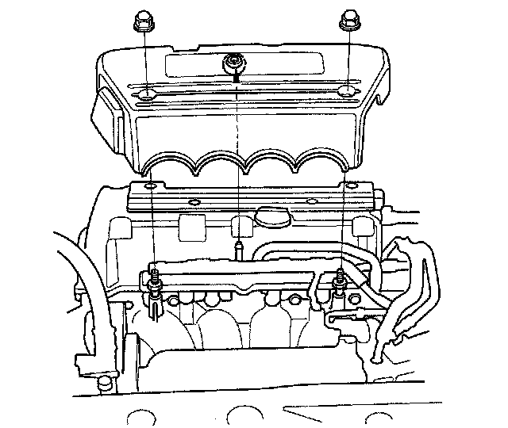
3. Remove the vacuum hose (A) and breather pipe (B), then remove the air intake duct (C).
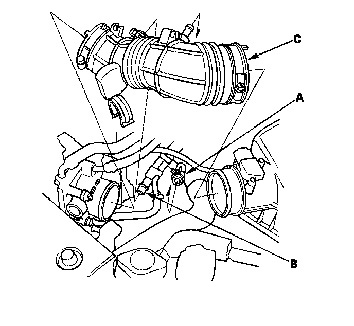
4. Remove the engine wire harness connectors and wire harness clamps from the intake manifold.
^ Four fuel injector connectors
^ Manifold absolute pressure (MAP) sensor connector
^ Throttle actuator connector
5. Remove the ground cable (A) and harness clamp bracket (B), then remove the harness holder (C) from the stay.
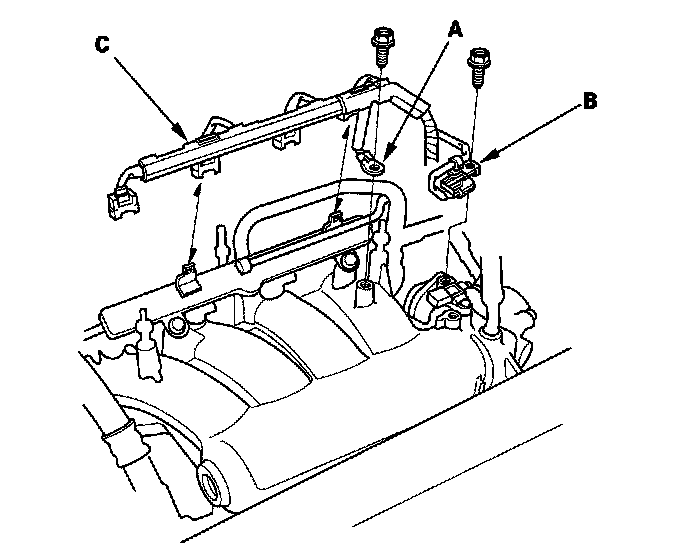
6. Remove the positive crankcase ventilation (PCV) hose (A), evaporative emission (EVAP) canister hose (B) and brake booster vacuum hose (C).
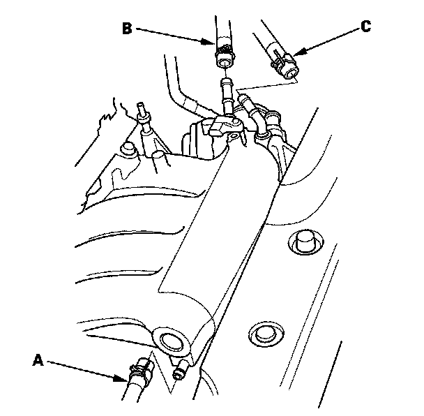
7. Remove the water bypass hoses, then plug the water bypass hoses.
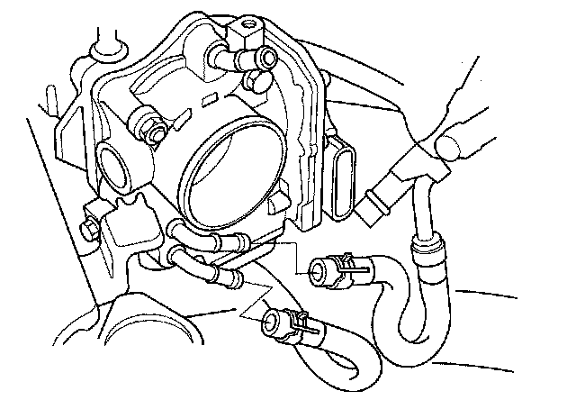
8. Remove the quick-connect fitting cover (A), then disconnect the fuel feed hose.
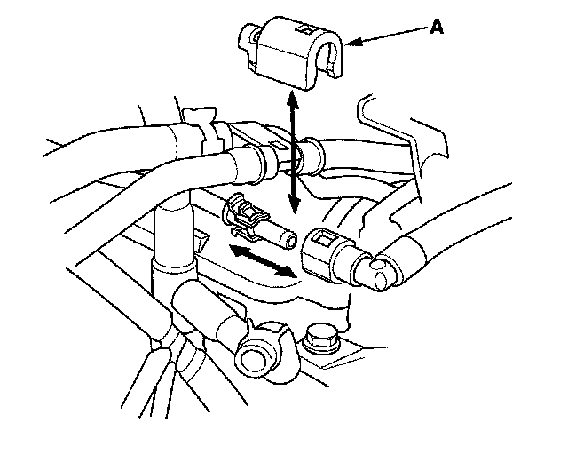
9. Raise the vehicle on the lift to full height.
10. Remove the connector (A), then remove the intake manifold bracket (B).
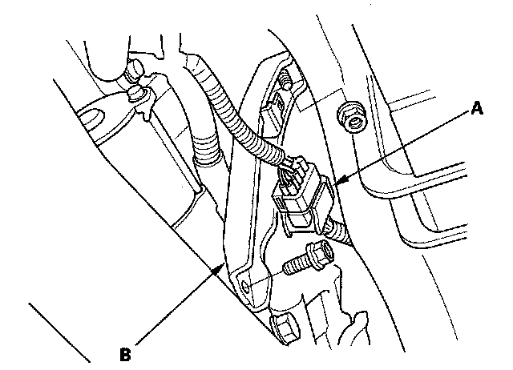
11. Lower the vehicle on the lift.
12. Remove the intake manifold (A) from the cylinder head, then remove the water bypass hose (B).
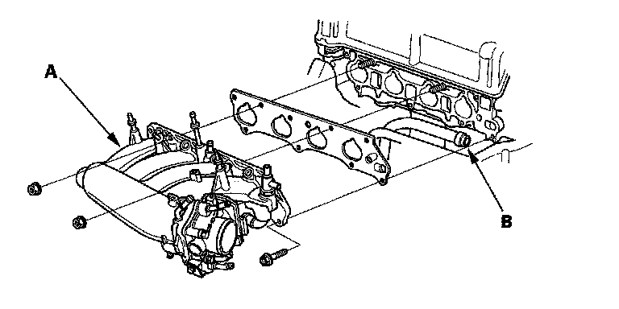
Installation
1. Install the water bypass hose (A) to the intake manifold (B), then install the intake manifold with a new gasket (C), and tighten the bolts and nuts in a crisscross pattern in two or three steps, beginning with the inner bolt.
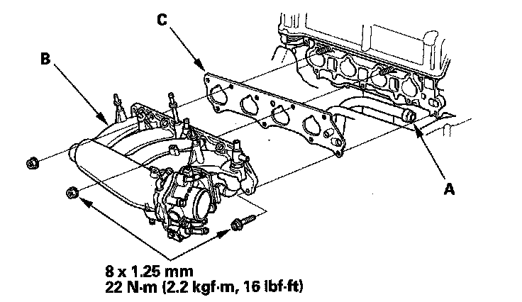
2. Raise the vehicle on the lift to full height.
3. Install the intake manifold bracket (A), then install the connector (B).
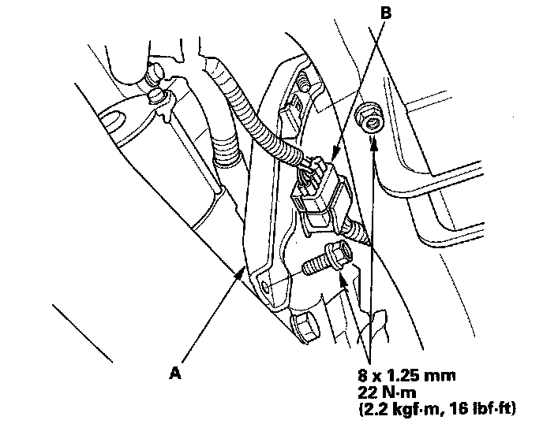
4. Lower the vehicle on the lift.
5. Connect the fuel feed hose, then install the quick-connect fitting cover (A).
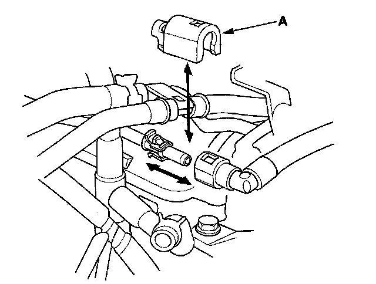
6. Install the water bypass hoses.
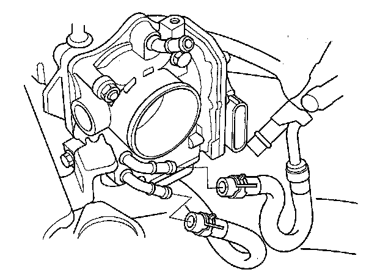
7. Install the positive crankcase ventilation (PCV) hose (A), evaporative emission (EVAP) canister hose (B) and brake booster vacuum hose (C).
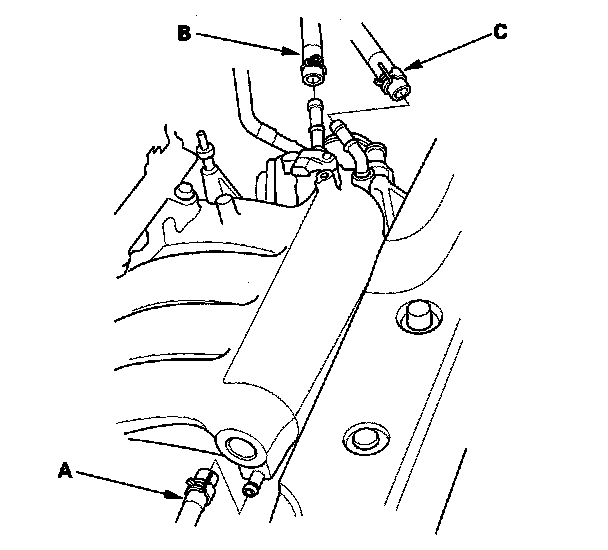
8. Install the harness holder (A) to the stay, then install the ground cable (B) and harness clamp bracket(C).
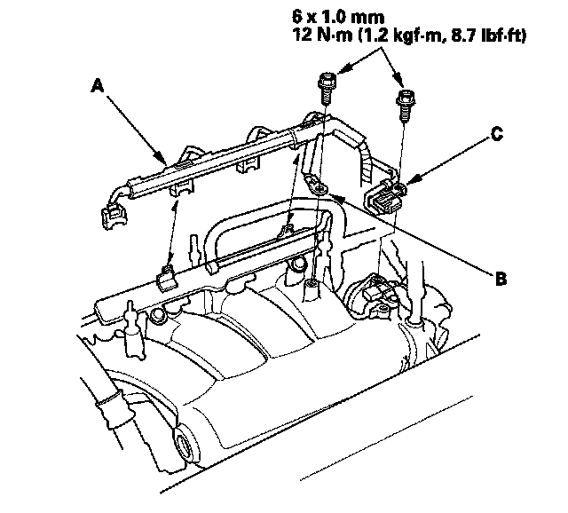
9. Connect the engine wire harness connectors, and install the wire harness clamps to the intake manifold.
^ Four fuel injector connectors
^ Manifold absolute pressure (MAP) sensor connector
^ Throttle actuator connector
10. Install the air intake duct (A), then install the vacuum hose (B) and breather pipe (C).
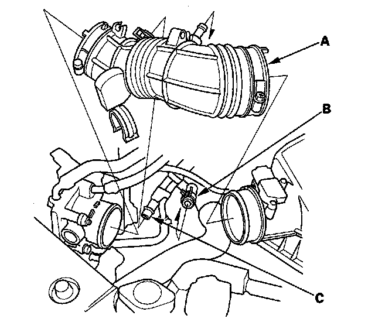
11. Install the engine cover.
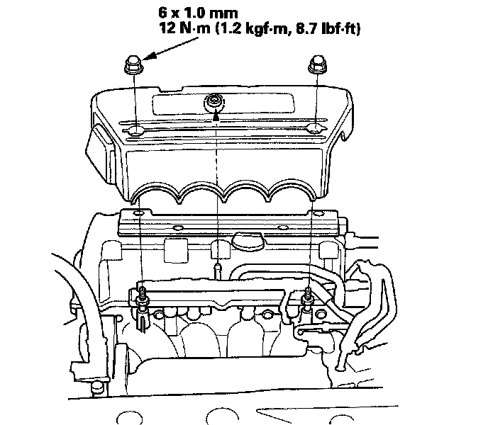
12. Clean up any spilled engine coolant.
13. After installation, check that all tubes, hoses and connectors are installed correctly.
14. Refill the radiator with engine coolant, and bleed the air from the cooling system with the heater valve open.